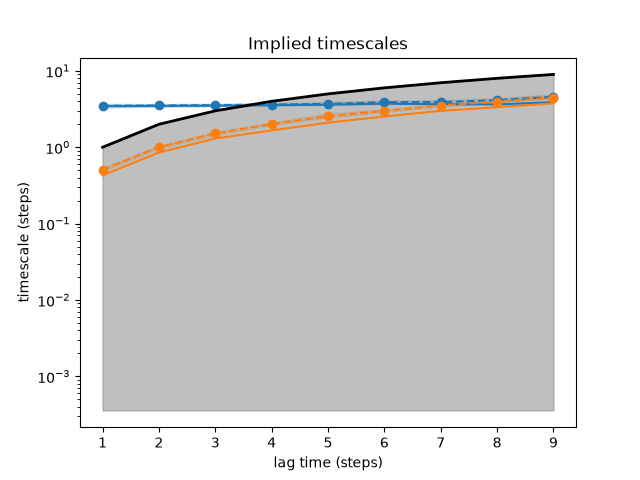

Note
Go to the end to download the full example code.
Implied timescales¶
This example demonstrates how to obtain an implied timescales (ITS) plot for a Bayesian Markov state model.

8 import matplotlib.pyplot as plt
9 import numpy as np
10
11 from deeptime.clustering import KMeans
12 from deeptime.data import double_well_2d
13 from deeptime.markov import TransitionCountEstimator
14 from deeptime.markov.msm import BayesianMSM
15 from deeptime.plots import plot_implied_timescales
16 from deeptime.util.validation import implied_timescales
17
18 system = double_well_2d()
19 data = system.trajectory(x0=np.random.normal(scale=.2, size=(10, 2)), length=1000)
20 clustering = KMeans(n_clusters=50).fit_fetch(np.concatenate(data))
21 dtrajs = [clustering.transform(traj) for traj in data]
22
23 models = []
24 lagtimes = np.arange(1, 10)
25 for lagtime in lagtimes:
26 counts = TransitionCountEstimator(lagtime=lagtime, count_mode='effective').fit_fetch(dtrajs)
27 models.append(BayesianMSM(n_samples=50).fit_fetch(counts))
28
29 its_data = implied_timescales(models)
30
31 fig, ax = plt.subplots(1, 1)
32 plot_implied_timescales(its_data, n_its=2, ax=ax)
33 ax.set_yscale('log')
34 ax.set_title('Implied timescales')
35 ax.set_xlabel('lag time (steps)')
36 ax.set_ylabel('timescale (steps)')
Total running time of the script: (0 minutes 4.210 seconds)
Estimated memory usage: 730 MB